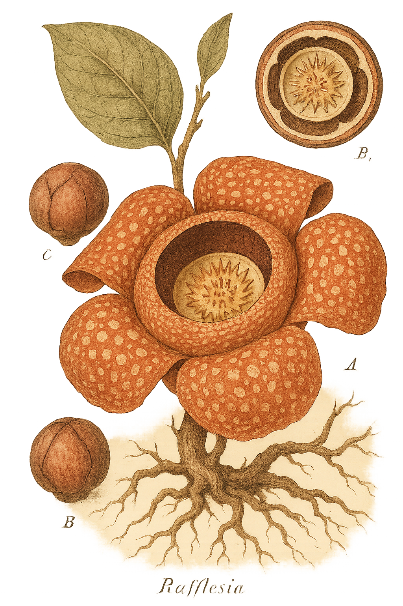

Rafflesiaceae
Corpse Flower Family (Rafflesia)
Rafflesiaceae is a family of highly specialized holoparasitic plants found in Southeast Asia. Lacking stems, leaves, roots, and chlorophyll, these plants exist primarily as nutrient-absorbing filaments within their host vines (Tetrastigma spp., Vitaceae). They are famous for producing the largest known individual flowers in the world (genus Rafflesia), which emerge directly from the host tissue and emit pungent odors resembling decaying flesh to attract fly pollinators.
Overview
The Rafflesiaceae family represents an extreme example of adaptation to a parasitic lifestyle. Its members are entirely dependent on their specific host plants, vines of the genus Tetrastigma (grape family, Vitaceae), for water and nutrients. The vegetative body of the parasite is reduced to a network of fungus-like filaments that penetrates and lives within the host's tissues (endophytic).
The only part of the plant that emerges externally is the reproductive structure – the flower bud, which develops over months before bursting open into a massive, fleshy flower (in Rafflesia) or smaller flowers (in Rhizanthes and Sapria). These flowers are short-lived, lasting only a few days. Pollination is carried out by carrion flies attracted by the flower's fetid smell and appearance. Successful pollination leads to the development of a fleshy fruit containing thousands of minute seeds.
Many species in this family are rare and face significant threats from habitat destruction (deforestation) and collection, making them conservation priorities. Their dependence on specific hosts and pollinators makes them particularly vulnerable.
Quick Facts
- Scientific Name: Rafflesiaceae
- Common Name: Corpse Flower Family (Rafflesia)
- Number of Genera: 3 (Rafflesia, Rhizanthes, Sapria)
- Number of Species: Approximately 40
- Distribution: Southeast Asia (Indonesia, Malaysia, Philippines, Thailand)
- Evolutionary Group: Eudicots - Malpighiales
- Lifestyle: Obligate Holoparasites (on Tetrastigma vines)
Key Characteristics
Growth Form and Habit
Endophytic holoparasites. The vegetative body consists of cellular strands or filaments living entirely within the roots or stems of the host plant (Tetrastigma spp.). There are no stems, leaves, or roots, and no chlorophyll.
Leaves, Stems, Roots
Completely absent. All vegetative functions are carried out by the endophytic filaments absorbing nutrients from the host.
Sexuality and Inflorescence
Flowers emerge directly from the host's roots or stems, typically appearing solitary (though multiple buds may arise near each other). Plants are dioecious, meaning individual flowers are either male or female, and are found on different host infections (likely representing different individual parasites).
Flowers
Flowers are highly modified, fleshy, and often very large (up to a meter across in Rafflesia arnoldii). They are typically reddish-brown or orange, often with lighter spots or blotches, and emit strong, foul odors (like rotting meat).
- Perianth: Consists of a single whorl (perigone) of usually 5 (sometimes more) thick, fleshy lobes (tepals) fused at the base into a tube.
- Central Structure: The perianth tube surrounds a central chamber topped by a 'diaphragm' with a central opening. A large central 'column' rises within the chamber.
- Male Flowers: Numerous sessile anthers are located on the underside of the disc at the top of the central column.
- Female Flowers: Possess an inferior ovary (often embedded within host tissue during development), composed of fused carpels forming a single chamber with complex, folded parietal placentas bearing numerous ovules. The top of the central column forms the stigmatic surface, often underneath a disc.
Fruits and Seeds
The fruit is a fleshy, berry-like structure that develops from the inferior ovary. It contains thousands of minute seeds embedded in pulp.
Seed Dispersal
Seed dispersal mechanisms are not fully understood but are thought to involve small mammals (like tree shrews or rodents) that eat the fruit and disperse the tiny seeds, potentially introducing them to new host roots via defecation or adherence to feet.
Chemical Characteristics
Produce complex volatile organic compounds, including sulfur-containing molecules, that mimic the smell of carrion or feces to attract specific fly pollinators (e.g., Lucilia and Sarcophaga flies). Lacks photosynthetic pigments.
Field Identification
Identifying Rafflesiaceae is usually unmistakable due to their unique appearance and habit:
Primary Identification Features
- Emergent Flower from Host: The most obvious feature is the large (Rafflesia) or smaller (Rhizanthes, Sapria), fleshy flower appearing directly on the roots or stems of a Tetrastigma vine.
- Lack of Vegetative Parts: No leaves, stems, or green color associated with the flower.
- Flower Morphology: Typically 5 fleshy, reddish-brown/orange, often spotted perianth lobes surrounding a central chamber with a diaphragm and column.
- Foul Odor: Strong smell of decaying meat emitted by the flower.
- Habitat and Location: Found only in Southeast Asian rainforests, parasitic specifically on Tetrastigma vines.
Secondary Identification Features
- Flower Buds: Look for large, cabbage-like buds emerging from the host vine before the flower opens.
- Host Plant: Identifying the host vine as Tetrastigma (Vitaceae) confirms the likelihood of Rafflesiaceae.
- Remains of Old Flowers: Decaying remnants of previous flowers might be present near buds or open flowers.
Seasonal Identification Tips
- Flowering Season: Can occur year-round but often peaks during wetter periods. Flowering is unpredictable and depends on the parasite's internal cycle and host condition.
- Observation: Best identified when the flower is open (lasts only a few days) or when the distinctive buds are present.
Common Confusion Points
While distinctive, the "corpse flower" common name can cause confusion:
- Amorphophallus titanum (Titan Arum, Araceae): Also called "corpse flower" due to its smell. However, it produces a massive inflorescence (spadix and spathe), not a single flower, and possesses huge compound leaves and a large underground corm (it is not a parasite).
- Balanophoraceae and Hydnoraceae: Other families of root parasites that produce unusual emergent flowers, but their flower structures are very different (often smaller, lacking the 5-lobed perianth and central column/diaphragm structure of Rafflesiaceae) and they belong to different orders (Santalales and Piperales, respectively).
- Fungi: Large fungal fruiting bodies can sometimes emerge from the ground or wood, but lack the distinct floral structure of Rafflesiaceae.
Field Guide Quick Reference
Look For:
- Large, fleshy flower emerging from host vine (Tetrastigma)
- No leaves, stems, or green parts
- Typically 5 reddish/brown/orange spotted lobes
- Strong foul odor (rotting meat)
- Habitat: SE Asian rainforests
- Dioecious (separate M/F flowers)
- Inferior ovary (female flowers)
Key Variations:
- Flower size (huge in Rafflesia, smaller in others)
- Specific patterns of spots/coloration
- Details of central column/disc structure
Notable Examples
The family is famous for the genus Rafflesia, but includes two other distinct genera:

Rafflesia arnoldii
Giant Padma, Corpse Flower
Found in Sumatra and Borneo, this species produces the largest single flower on Earth, reaching up to 1 meter in diameter and weighing up to 11 kg. Its massive, reddish-brown, spotted flower emits a powerful stench of decay to attract pollinators.

Sapria himalayana
Hermit's Spittoon
Found from northeastern India through mainland Southeast Asia. Flowers are much smaller than Rafflesia (up to 20 cm across) but still striking, with bright red perianth lobes covered in yellowish spots. It parasitizes different species of Tetrastigma.
Phylogeny and Classification
The evolutionary placement of Rafflesiaceae was long debated due to their extreme morphological modifications caused by parasitism, which obscured relationships. Historically, they were often linked to Aristolochiaceae based on superficial similarities in flower features.
However, multiple independent molecular phylogenetic studies have now robustly placed Rafflesiaceae within the order Malpighiales. Surprisingly, their closest relatives appear to be within the massive family Euphorbiaceae (Spurge family), possibly rendering Euphorbiaceae paraphyletic if Rafflesiaceae is excluded. This placement implies an astonishing degree of morphological divergence from typical leafy, photosynthetic relatives like rubber trees or poinsettias.
Position in Plant Phylogeny
- Kingdom: Plantae
- Clade: Angiosperms (Flowering plants)
- Clade: Eudicots
- Clade: Rosids
- Order: Malpighiales
- Family: Rafflesiaceae (Nested within/sister to parts of Euphorbiaceae sensu lato)
Evolutionary Significance
Rafflesiaceae represents a pinnacle of evolutionary specialization:
- Extreme Morphological Reduction: Demonstrates how parasitic lifestyles can lead to the complete loss of typical plant organs (stems, leaves, roots, photosynthesis).
- Gigantism in Flowers: Evolution of the world's largest flowers in Rafflesia, likely driven by pollinator attraction strategies.
- Convergent Evolution: While related to Euphorbiaceae, their parasitic form superficially resembles unrelated parasitic groups like Hydnoraceae or Balanophoraceae.
- Phylogenetic Surprise: Their placement within Malpighiales, far from previously hypothesized relatives, showcases the power of molecular data in uncovering unexpected evolutionary histories.
- Rapid Evolution: Evidence suggests the flowers may have increased dramatically in size over relatively short evolutionary timescales after adopting parasitism.